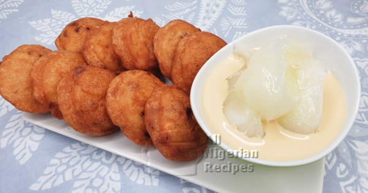

Creamy No-Bake Peach Tart

Description
This creamy no-bake peach tart is a refreshing dessert perfect for warm weather.
Ingredients
- 9 graham crackers
- 1/4 teaspoon ground cinnamon
- 1/8 teaspoon ground nutmeg
- 1 pinch salt
- 1/2 cup sliced almonds
- 8 tablespoons unsalted butter
- 2 tablespoons honey
Steps
- Line a 9-inch tart pan with a removable bottom with a round of parchment paper. Lightly grease pan and paper.
- Prepare the crust: place graham crackers, cinnamon, nutmeg, and salt into the bowl of a food processor and process until fine crumbs form.
- Place almonds in a skillet over medium-low heat. Cook, stirring constantly, until almonds are toasted, about 5 minutes. Remove from heat and pour almonds into the food processor bowl with the graham crumbs. Pulse until combined.
- Melt butter in the skillet using the residual heat of the pan, or if needed, place pan over low heat just until butter is melted. Add butter and honey to the food processor bowl, and pulse until mixture is thoroughly combined.
- Pour crust mixture into prepared tart pan. Press crust firmly and evenly into the bottom and up sides of the pan. Place tart pan on a small baking sheet or cutting board, then freeze until crust is firm, at least 15 minutes.
- For filling, place gelatin and cold water in a saucepan; let stand for 5 minutes to allow gelatin to bloom.
- Meanwhile, add peaches, sugar, lemon juice, vanilla, Greek yogurt, and heavy cream to the jar of a high-powered blender. Blend mixture until very smooth, 1 to 2 minutes. Taste, and add more sugar or lemon juice, if needed; then blend again to combine.
- Place saucepan with gelatin over low heat; cook, stirring constantly, until gelatin dissolves, 1 to 3 minutes. With the blender running on low speed, carefully pour gelatin mixture into peach mixture. Gradually turn blender speed up to High and blend for 30 seconds.
- Remove tart crust from the freezer. Carefully pour peach mixture into the tart crust, only filling to the lip of the crust. You will have extra peach filling. Place extra filling into a ramekin or small dessert bowl and refrigerate until set; and enjoy as a separate dessert once fully chilled.
- Refrigerate tart, uncovered, for at least 6 hours to overnight to set.
- When ready to serve, remove tart from pan and remove parchment paper. If desired, top tart with sliced peaches and blueberries just before serving.
Afang Soup: A Green, Leafy Nigerian Vegetable Soup

Afang soup, eaten by Efik and Ibibio people of Nigeria is a delicious stew made with Afang leaves and a leafy vegetable called waterleaf or malabar spinach
Ingredients
- 400g sliced Okazi/Afang leaves | about 4 handfuls
- 250g Water leaves
- 20 to 25 cl red palm oil (about 1 drink glass)
- Beef, Kanda and Dry fish
- 2 tablespoons ground crayfish
- pepper and salt (to taste)
- 2 stock cubes
Steps
- Boil the beef and Kanda with the diced onions and stock cubes in a very small quantity of water. When done, add the dry fish and cook for about 5 more minutes.
- Now add the palm oil, crayfish and pepper. Once it starts boiling, add the afang (okazi) leaves, water leaves and periwinkle. When the okazi leaves have softened and the water has dried up a bit, add salt to taste and leave to simmer for about 5 minutes.
- Remove from heat and serve hot with fufu or eba.
Akara (Beans Cake)

Akara is a type of fritter made from beans. Akara is made from peeled beans (black-eyed peas), washed and ground with pepper, and other preferred seasonings, then beaten to aerate them, and deep-fried in small balls.
Ingredients
- 3 cups black-eyed or Nigerian brown beans
- 1 small red onion
- Hot spicy pepper. Use:
- Habanero Pepper or
- Scotch Bonnet Pepper or
- Fresh cayenne pepper
- Salt (to taste)
- Vegetable oil (for frying)
- 1 to 1.5 sweet peppers (optional)
Before you prepare Akara
- Soak the beans in water for about 5 minutes then peel it using any of the beans peeling methods: by hand, with a blender or with a mortar. You can also crack the beans to make the peeling easier by hand.
- When done, soak the beans in water for at least one hour to soften it. This is so your blender will grind it into the smoothest paste.
- Chop the onions and pepper into tiny pieces.
- If making the coloured Akara, chop the sweet peppers into small pieces
Steps
The process of making Akara is a scientific one 😀. So carefully read through
- After at least one hour, remove the beans seeds from the water and put in a sieve.
- Grind them bit by bit in a blender, using very little water. Watch the video below to hear and see my tricks when blending beans for Akara.
- If making the coloured one, add the chopped sweet pepper to the beans seeds, mix very well before blending.
- After blending, if you do not have a hand mixer or a stand mixer, pour in a bowl, cover and set it aside to rest for about one hour. If you live in a hot climate, 30 minutes should be enough. This is to allow the oligosaccharides, the sugar molecules in beans that helps with the forming of Akara balls and floating in hot oil to be activated.
- After leaving it to rest, bring it out and scoop the quantity you can fry in one batch into a mortar and mix it with the pestle (see video) till the beans paste looks fluffy and whiter. If you do not have a mortar and pestle, put the one batch back into your blender and blend again till it’s fluffy and whiter.
- If you have a stand mixer or a hand mixer, no need to cover the beans paste and leave for a while, just go straight to mixing. I whisked the one in the video below for 10 minutes. Do it till the beans paste is noticeably whiter and fluffy.
- Set some oil to heat up. Akara should be deep fried so make sure the oil is at least 2 inches deep.
- Scoop a quantity you can fry in one batch into a bowl. Add salt and the chopped onions and hot and spicy pepper. Mix very well. Adding salt to raw beans paste and knowing when it’s enough is a trick that is better learned by experience. First taste the raw beans paste. Add a bit of salt, mix and taste. If it still tastes raw, add a bit more and mix well again. Once the salt is enough, you will notice a change in the taste from raw to savoury.
- When the oil is hot, you need medium heat, scoop the beans paste into the oil. A well whisked beans paste should float on the oil. If it sinks, it means the beans paste was not well whisked, the oil is not hot enough, the paste is too watery, or all of the above. 😀 Watch the video below so you will not experience any of these.
- Fry the underside till you notice it browning and the raw top has increased in size showing that the inside has cooked (somehow). Then flip to fry the top side.
- It is done when golden all over.